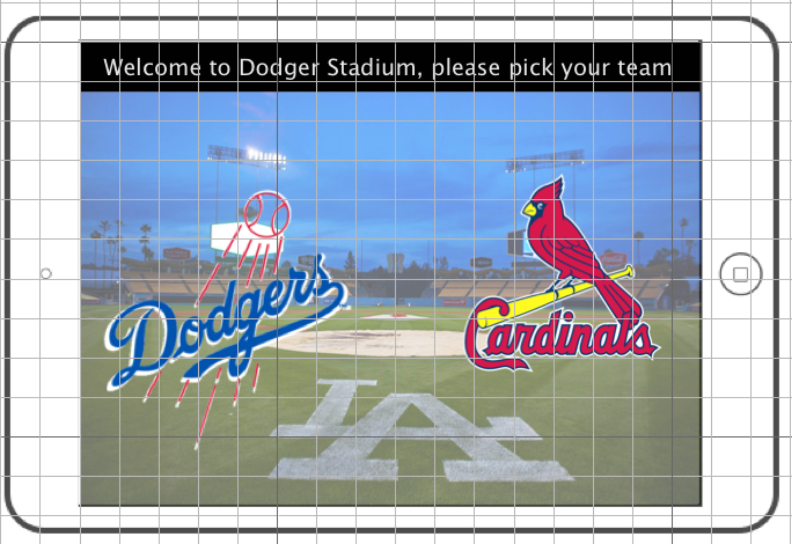
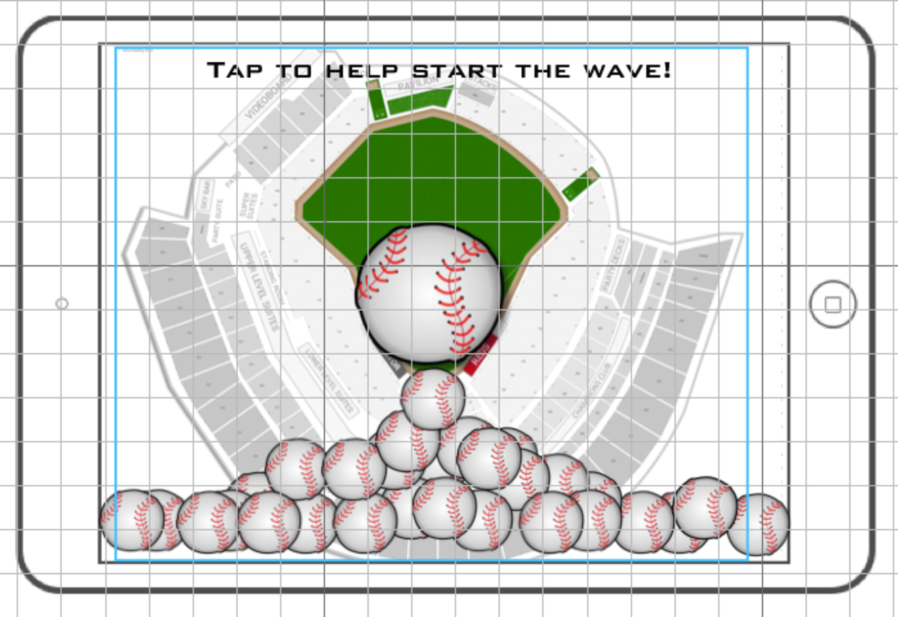
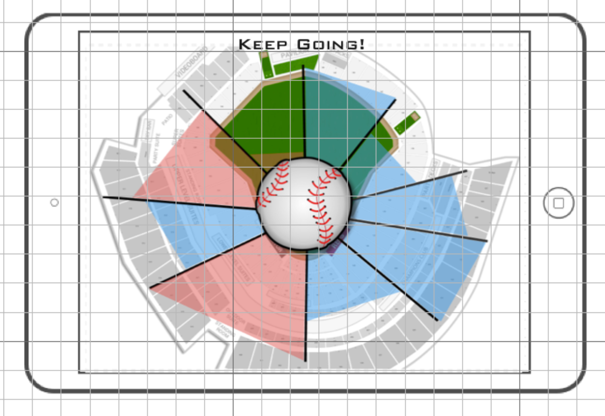
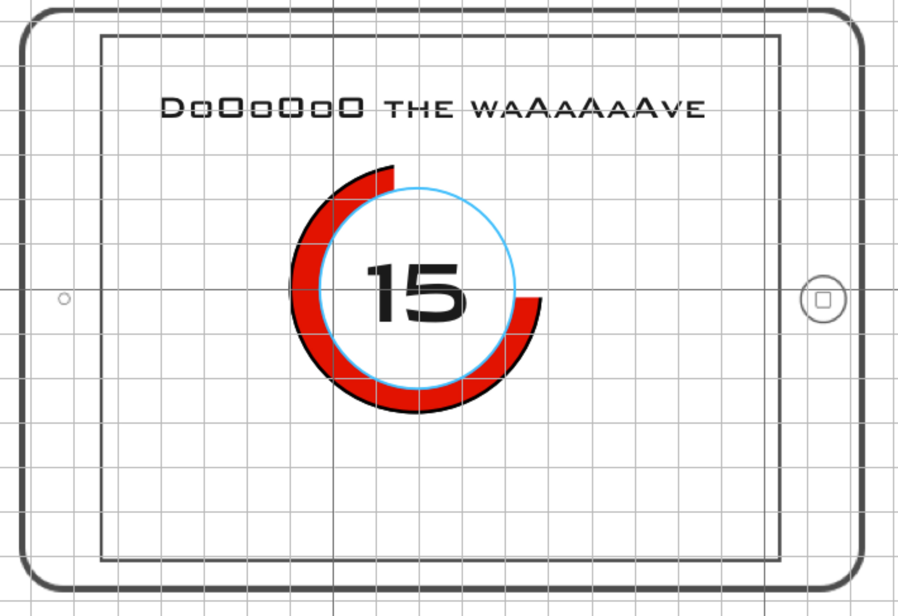
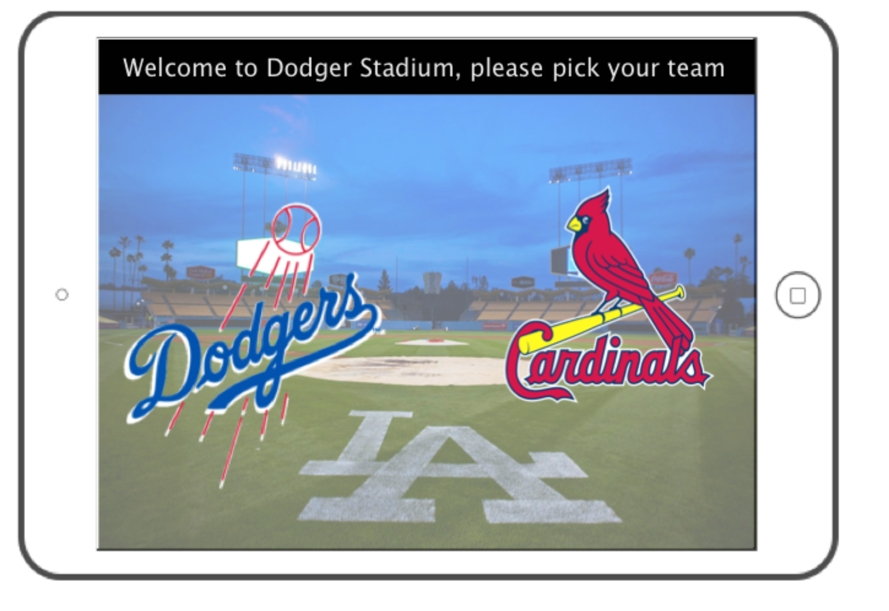
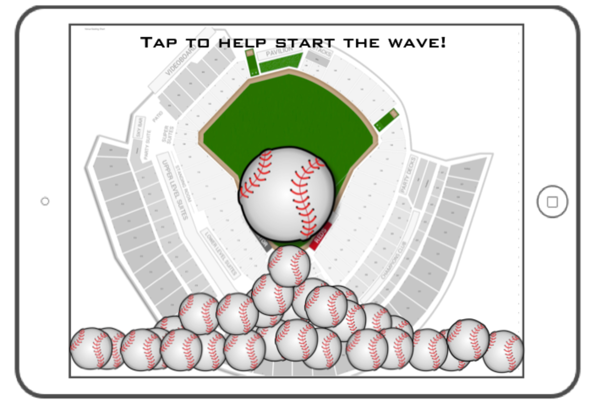
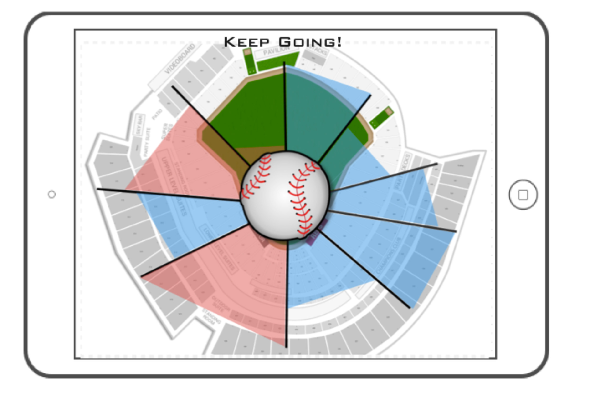
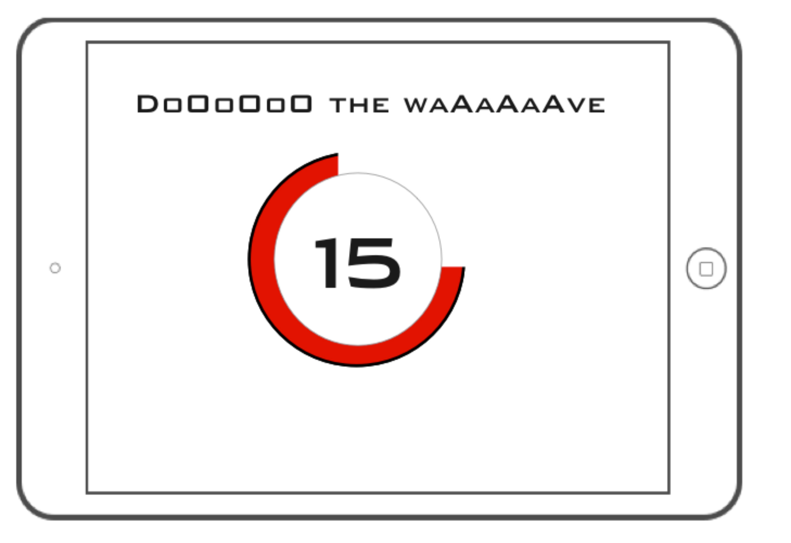

Lead User: The lead user for this assignment is a young adult, Timmy, who enjoys going to baseball games with his family. Often, he has a hard time watching the game itself but enjoys the fun interactions with the rest of the crowd. His favorite is the wave which he tries to start himself every time he goes to a game. His tactic is to bring signs to start the wave and get on the jumbotron to pump up the crowd.
Task: The task is to help Timmy find more enjoyment and to help facilitate better crowd interactions. This specific interaction involved Timmy's favorite game, the wave.
The interface itself is located on the back of each seat within the stadium. We plan to build better interfaces for the crowd interactions at the stadium. For example, the activities put on between plays or at halftime. The focus is on the wave because it is our lead users favorite game and provided for an interesting design space.
PDF:






